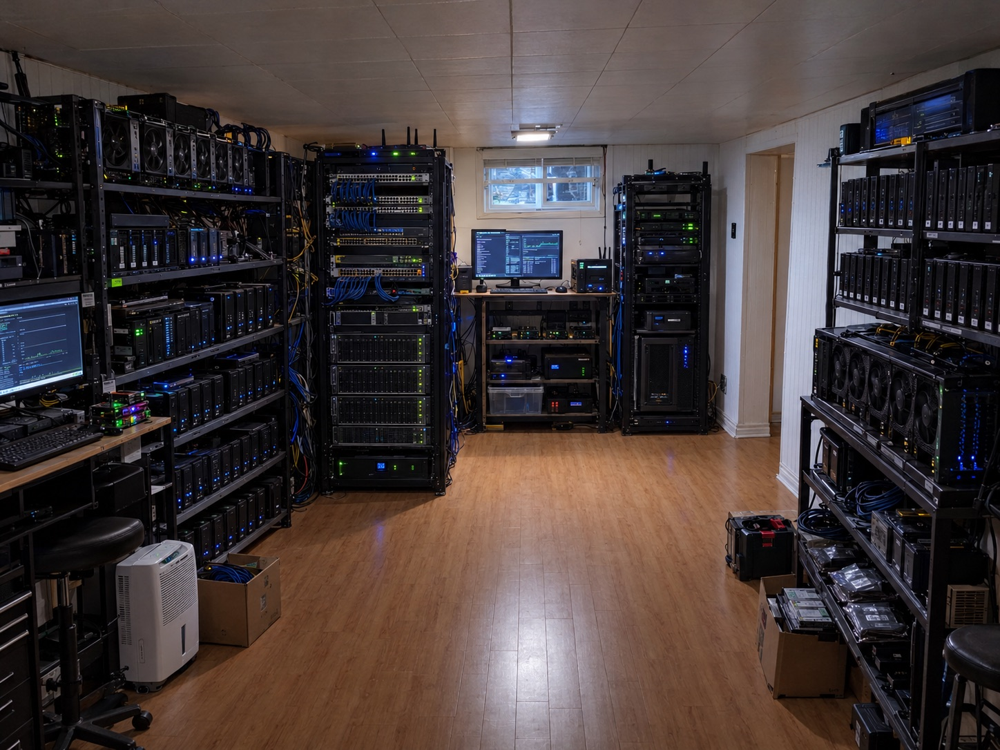

Homelab Server Room
The cozy basement room where the entire self-hosted stack physically lives: racked hardware, managed switching, and the cable plant behind the 7-node cluster

Overview
In one sentence: this project is the physical layer of everything else on this site, a dedicated basement server room that houses the hardware, switching, power, and cable plant behind the Proxmox hosts, the 7-node Kubernetes cluster, and the nine self-hosted services.
Software pages describe what runs; this page describes where it runs. The room holds 3 desktop PCs and 4 laptops acting as bare-metal Proxmox VE 8.x hosts, a managed switch with 802.1Q VLAN trunking, a router handling inter-VLAN routing, DHCP, and NAT, and a 5 GHz wireless radio in bridge mode that extends the cluster network to the laptop nodes. Every logical design on this site, the VLAN segmentation, the storage network, the zero-trust access layer, ultimately terminates in a physical port, cable, or radio link in this room.
The engineering problem a server room solves is not compute, it is order: one known place for every device, one known path for every cable, one known breaker for every power feed, and one known procedure when something fails at 2 AM. Status: active and in daily use; this is the verified physical environment behind the other infrastructure projects, not a render or a plan.
Requirements and Engineering Objectives
- Functional: house 7 physical hosts plus network gear with every device reachable for hands-on maintenance; provide wired Ethernet to the desktop nodes and a dedicated wireless bridge for the laptops.
- Reliability: survive single-device failure without taking down the whole lab; keep the control plane and storage nodes on the most stable wired power and network paths.
- Thermal and noise: a basement room gives passive cooling headroom and acoustic isolation from living space; no dedicated HVAC is installed, so load is kept within what ambient basement temperatures can absorb.
- Safety: power draw distributed across standard household circuits; no overloaded power bars; cable runs kept off the floor where people walk.
- Budget constraint: consumer and repurposed hardware only; no rented rack space, no cloud spend.
Measured acceptance criteria (verified against the running lab): all 7 hosts boot to Proxmox and join their clusters; wired nodes hold stable link at negotiated speed; the wireless backhaul keeps laptop nodes in Ready state after the tuning documented on the Kubernetes page.
Physical Architecture
The room is organized so that signal flow matches physical layout: uplink enters at the router, switching happens at the managed switch, wired hosts patch straight into the switch, and the wireless radio hangs off a switch trunk port to serve the laptop shelf. Power and data are dressed separately to keep interference and trip hazards down.
This is the physical view of the same design drawn logically on the Kubernetes Infrastructure page. Where that page shows VMs, pods, and networks, this one shows racks, ports, and cables.
Component Reference
| Component | Responsibility | Technology | Depends on | Status |
|---|---|---|---|---|
| Desktop rack (3 PCs) | Primary compute and storage; hosts the control-plane VM and Longhorn storage nodes | Proxmox VE 8.x on bare metal | Switch ports, wired power | Verified, in daily use |
| Laptop shelf (4 laptops) | Lightweight worker nodes; redundancy for non-critical workloads | Proxmox VE 8.x; Wi-Fi power saving disabled | 5 GHz bridge, chargers | Verified, in daily use |
| Managed switch | VLAN segmentation (10/20/30), trunking to router and radio | 802.1Q managed switch | Router uplink | Verified |
| Router | NAT, DHCP reservations, inter-VLAN routing, firewall rules between segments | Documented on the Kubernetes page | ISP uplink | Verified |
| 5 GHz radio | Wireless backhaul bridging laptop nodes into VLAN 20 | Bridge mode, fixed channel | Switch trunk port | Verified |
| Ops desk | Monitoring dashboards, logs, hands-on maintenance | Grafana on VLAN 10 management | Switch, management VLAN | Verified |
| Cable plant | Cat6 runs from switch to wired hosts; dressed and labeled | Cat6, hook-and-loop ties | Physical layout | Verified |
| Exact UPS model, rack brand, wattage draw | Power protection and load numbers | - | - | Unknown, not yet measured or documented |
Power, Cooling, and Noise
Power: hosts are distributed across standard household outlets with daisy-chaining of power bars avoided. Exact wattage per node has not been instrumented yet; adding inline power metering is on the roadmap below.
Cooling: the basement location does the heavy lifting: ambient temperatures stay low year-round in a Canadian basement, which is also why this room doubles as the cold-end reference point for the cold-soak battery rig work. No dedicated HVAC; racks are spaced for front-to-back airflow and nothing is stacked exhaust-to-intake.
Noise: fan noise is contained by the room itself. Laptop nodes run cool and quiet; the desktops are the loudest component under sustained load, which matters mostly during long compile or replication jobs.
Build Process
Room selection and layout
Chose the basement room for ambient cooling and noise isolation. Planned the layout so the network shelf sits between the desktop rack and the laptop shelf, keeping every cable run short and the ops desk within sight of the gear.
Power and safety
Mapped which outlets share circuits, spread the hosts across them, and kept power bars off the floor. Verified: no warm plugs or cables under sustained load, checked by hand after the first full-power evening.
Network core
Mounted the router, switch, and radio on the network shelf. Configured the three VLANs and trunk ports exactly as documented in the Kubernetes build, then patched the desktop rack to access ports on VLAN 20.
Wireless backhaul
Fixed the 5 GHz radio to a clear channel in bridge mode and validated throughput and stability before trusting it with cluster traffic. The flapping behavior discovered here, and its fix, are documented under Challenges on the Kubernetes page.
Cable management and labeling
Dressed data and power separately with hook-and-loop ties, labeled both ends of every run, and photographed the finished rack for the record (the hero photo above).
Challenges and Lessons Learned
- Wireless nodes flapping: the laptop workers initially dropped heartbeats over the bridge. Fixed with a fixed channel, disabled NIC power saving, and tuned Kubernetes node timeouts. Lesson: treat a wireless link as a first-class network segment with its own failure modes, not as transparent Ethernet.
- Cable entropy: the first build had unlabeled cables; one accidental unplug cost an evening. Lesson: label both ends at install time, every time, and photograph the rack after changes.
- Thermal assumptions: one shelf position ran warmer than the rest because exhaust air recirculated. Lesson: check each shelf position by touch and sensor after loading the rack, not just the room average.
- Power distribution: with everything on one circuit the breaker margin was uncomfortable. Lesson: map circuits before racking, not after.
Limitations and Future Work
- No UPS is documented yet; a utility outage stops the lab. Prioritized: add UPS units for the network shelf and desktop rack, with NUT (Network UPS Tools) reporting into Prometheus.
- Power draw per node is unmeasured. Planned: inline smart plugs with power monitoring feeding Grafana.
- No environmental sensors in the room. Planned: a temperature and humidity sensor on the monitoring VLAN with alert thresholds.
- The wireless backhaul is a single point of failure for the laptop nodes. Acceptable for a homelab; documented rather than hidden.
- This page documents the photographed lab only. The larger stated estate (24-unit OptiPlex hosting fleet, 4 JBOD enclosures, the separate GPU rental stack, and the Raspberry Pi utility server) is tracked asset-by-asset with verification statuses in the Infrastructure Asset Register.